정비 공구
측정공구(캘리퍼·마이크로미터), 토크렌치, 일반·특수공구, 공구 관리(FOD·섀도보드), 정밀측정과 교정을 다룹니다.
Covers measuring tools (calipers, micrometers), torque wrenches, common and special tools, tool control (FOD, shadow boards), and precision measurement and calibration.
마이크로미터(Micrometer)는 0.001"(1μm급) 단위, 버니어 캘리퍼(Vernier Caliper)는 0.001"까지 측정합니다. 사용 전 영점(Zero)·교정 상태를 확인합니다.A micrometer measures to 0.001 inch; a vernier caliper reads to 0.001 inch. Check zero and calibration before use.
두께 게이지(Feeler)는 간극, 다이얼 인디케이터는 런아웃(Runout)·편심을 측정합니다. 측정공구는 떨어뜨림·과도한 힘을 피하고 청결히 보관합니다.Feeler gauges measure gaps; dial indicators measure runout/eccentricity. Protect measuring tools from drops and excessive force, and store them clean.
두께 게이지(Feeler)는 간극, 다이얼 인디케이터는 런아웃(Runout)·편심을 측정합니다. 측정공구는 떨어뜨림·과도한 힘을 피하고 청결히 보관합니다.
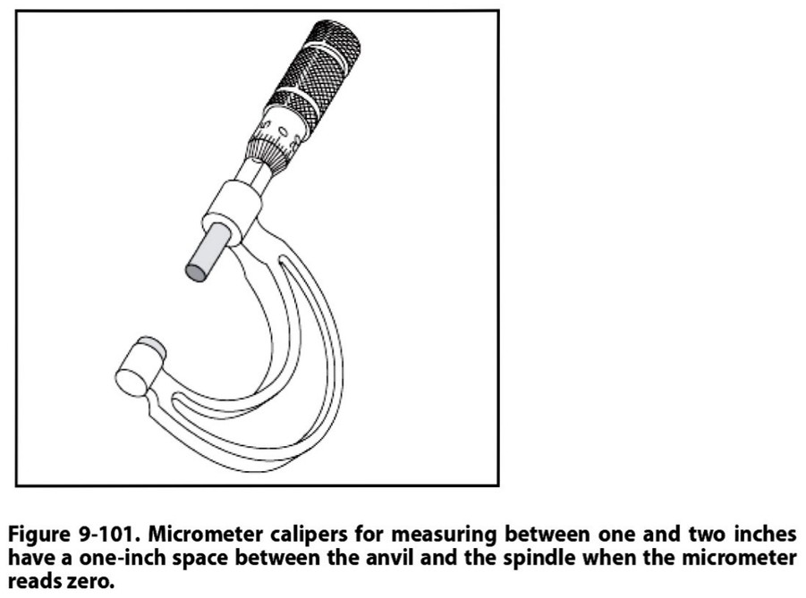
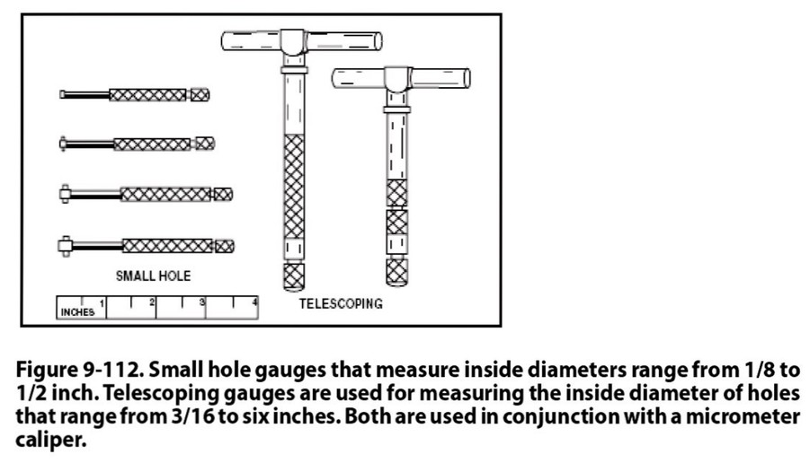
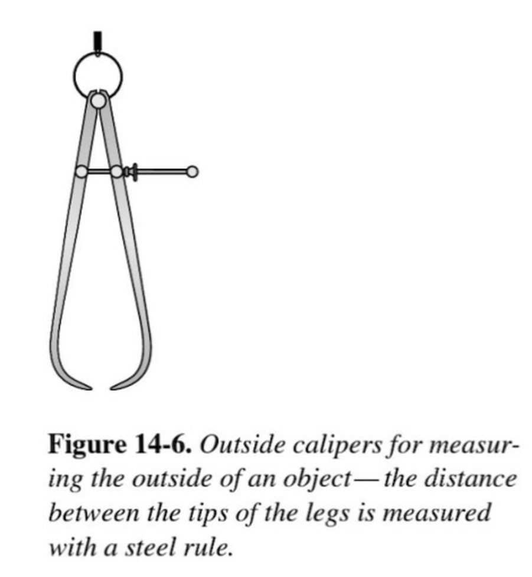
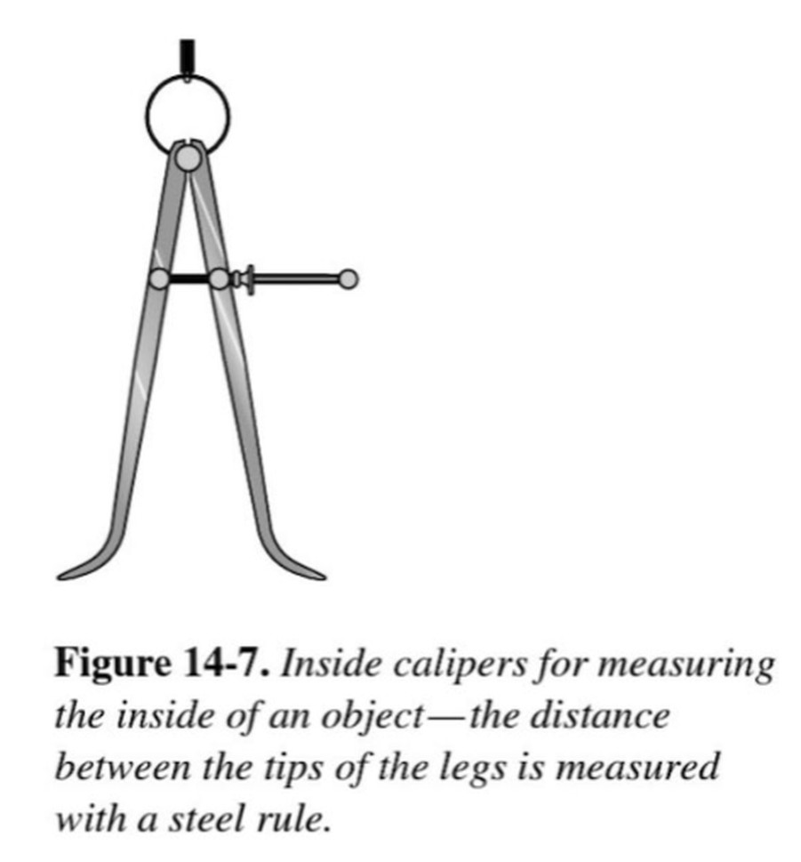
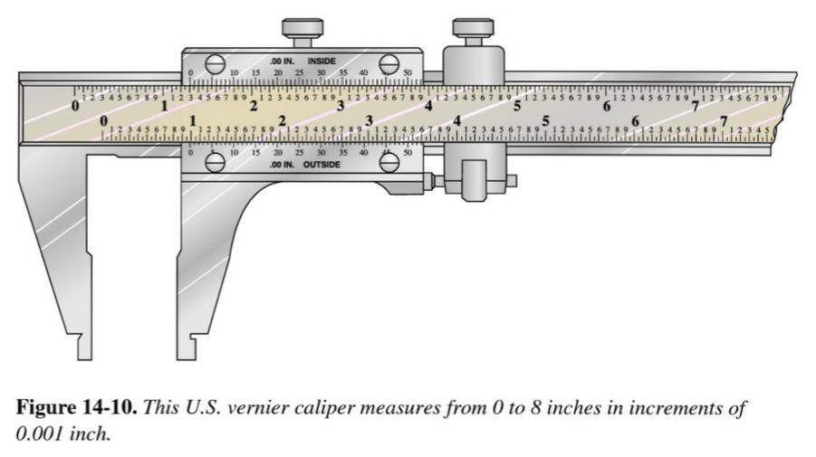
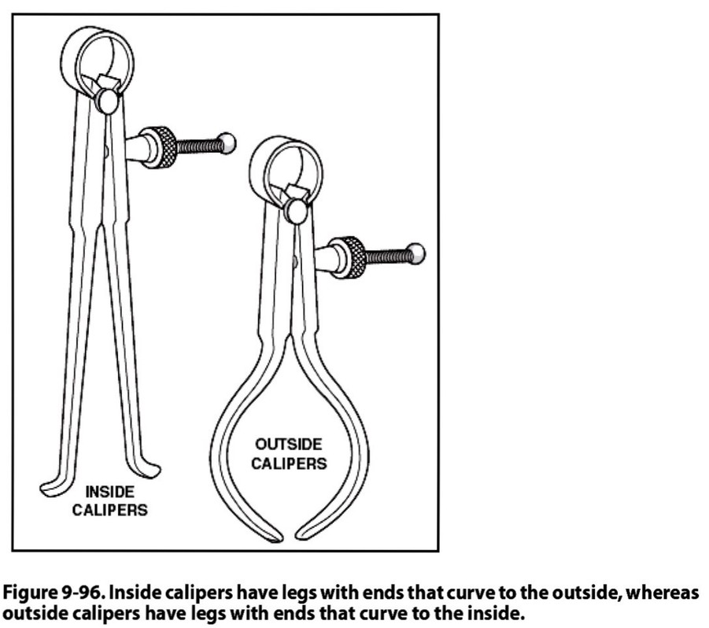
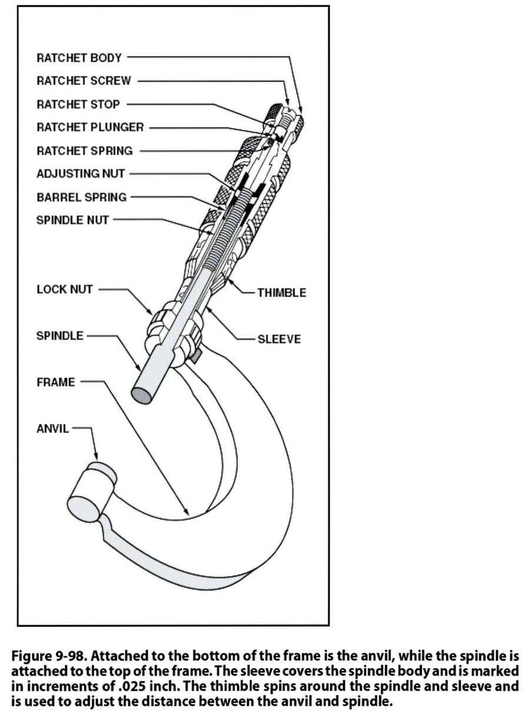
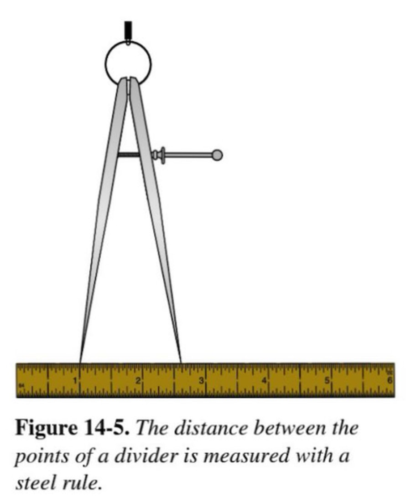
- A. 다이Die
- B. 탭Tap
- C. 브로치Broach
- D. 줄File
- A. 텔레스코핑 게이지로 재고 그 끝을 마이크로미터로 측정telescoping gauge and read the telescoping end with a micrometer
- B. 0~1인치 내경 마이크로미터로 직접 측정0- to 1-inch inside micrometer and read directly
- C. 스몰홀 게이지로 벌린 뒤 볼 끝을 마이크로미터로 측정small-hole gauge and take a micrometer reading of the ball end
- A. 마이크로미터 캘리퍼micrometer caliper gauge
- B. 두께(필러) 게이지thickness gauge
- C. 다이얼 게이지dial gauge
- A. 다이얼 인디케이터Dial indicator
- B. 마이크로미터Micrometer
- C. 텔레스코핑 게이지Telescoping gauge
- A. 0.1"0.1 inch
- B. 0.01"0.01 inch
- C. 0.001"0.001 inch
- D. 1"1 inch
- A. 마이크로미터Micrometer
- B. 필러(두께) 게이지Feeler gauge
- C. 토크렌치Torque wrench
- D. 해머Hammer
- A. 텔레스코픽 게이지Telescopic gauge
- B. 마이크로미터 캘리퍼Micrometer caliper
- C. 다이얼 인디케이터Dial indicator
- A. 다이얼 인디케이터Dial indicator
- B. 줄자Tape measure
- C. 각도기Protractor
- D. 수준기Level
토크렌치는 규정 체결력을 정확히 적용하기 위한 공구입니다. 빔식·클릭식·다이얼식이 있으며, 정기 교정이 필요합니다.A torque wrench applies a precise, specified clamping torque. Beam, click, and dial types exist and require periodic calibration.
연장대(Extension)나 어댑터를 축 방향으로 붙이면 유효 팔길이가 바뀌어 값 보정이 필요합니다. 규정 토크를 초과하거나 손으로 '감'에 의존하면 체결 불량이 됩니다.Adding an in-line extension/adapter changes the effective length and requires recalculating the setting. Exceeding spec torque or relying on 'feel' leads to improper clamp-up.
연장대(Extension)나 어댑터를 축 방향으로 붙이면 유효 팔길이가 바뀌어 값 보정이 필요합니다. 규정 토크를 초과하거나 손으로 '감'에 의존하면 체결 불량이 됩니다.
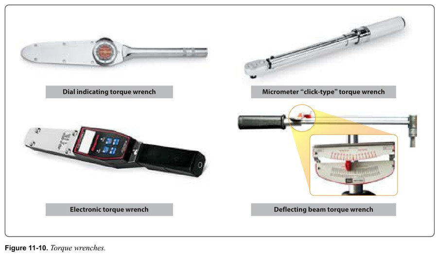
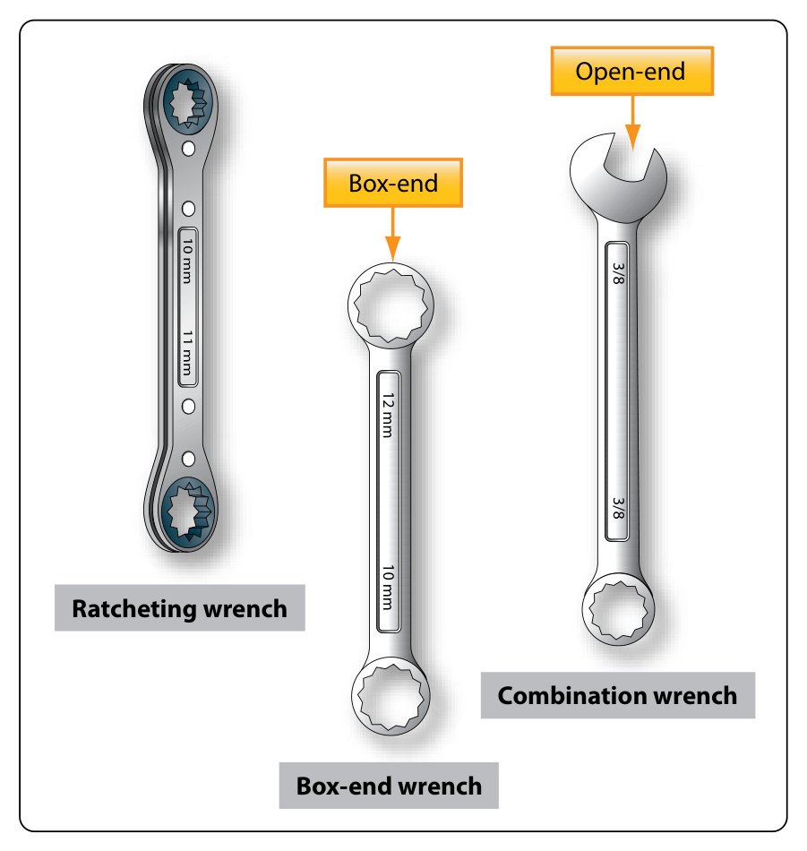
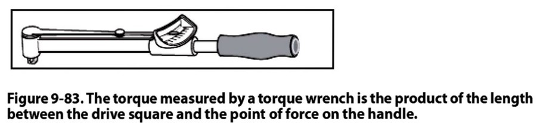
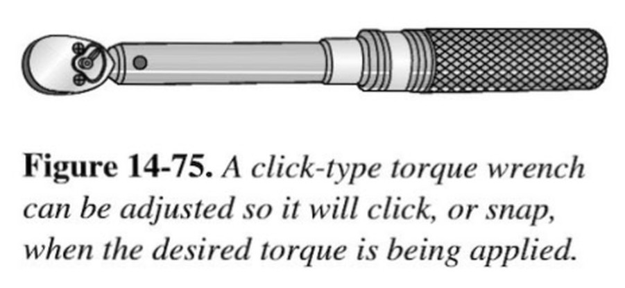
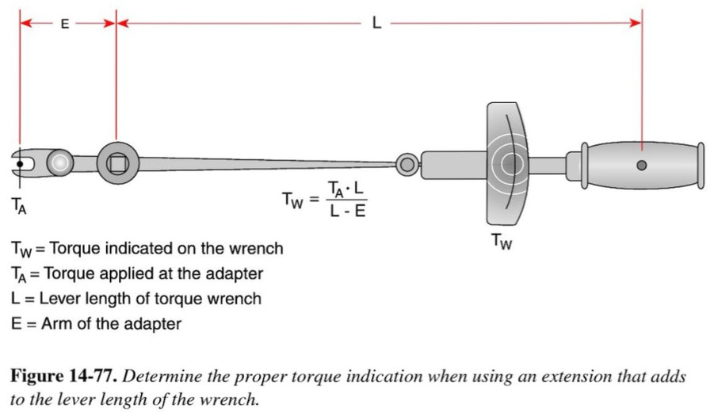
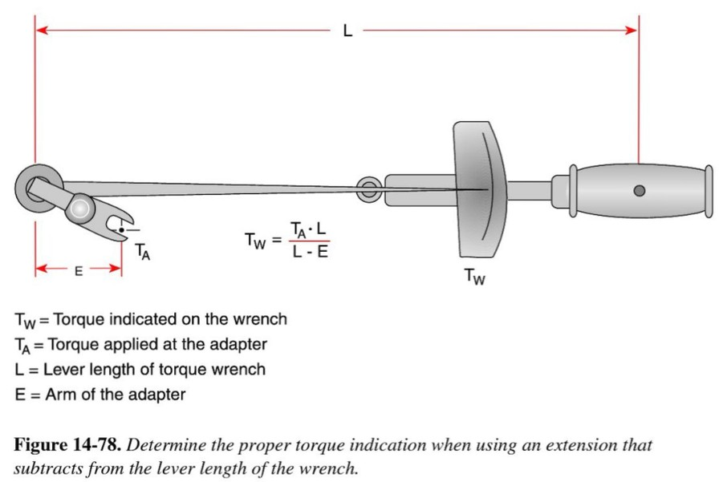
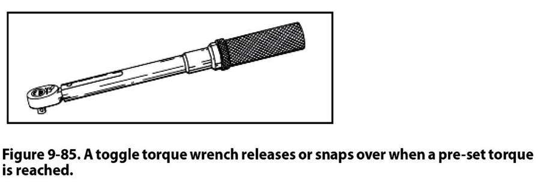
- A. 항상 정확Always accurate
- B. 과·부족 조임 위험Risks over/under-torque
- C. 교정 불필요Needs no calibration
- D. 권장됨Is recommended
- A. 토크렌치+소켓Torque wrench with socket
- B. 파이프렌치Pipe wrench
- C. 조절렌치Adjustable wrench
- D. 플라이어Pliers
- A. 값 그대로No change
- B. 값 보정Recalculating
- C. 두 배Doubling
- D. 무시Ignoring
- A. 최저 눈금으로 풀어 보관Set to its lowest setting
- B. 최고 눈금Highest setting
- C. 아무렇게나Any setting
- D. 분해Disassembled
일반공구: 렌치(오픈·박스·소켓), 드라이버, 플라이어, 해머, 드릴. 항공에서는 공구를 올바른 크기로 정확히 사용해 패스너 손상을 막습니다.Common tools: wrenches (open/box/socket), screwdrivers, pliers, hammers, drills. Use the correct size precisely to avoid damaging fasteners.
특수공구: 리벳건·버킹바, 세이프티와이어 트위스터, 홀듀플리케이터, 커넥터 삽입·추출 공구. 제작사 지정 특수공구가 필요한 작업이 많습니다.Special tools: rivet gun/bucking bar, safety-wire twister, hole duplicator, connector insertion/extraction tools. Many tasks require manufacturer-specified special tools.
특수공구: 리벳건·버킹바, 세이프티와이어 트위스터, 홀듀플리케이터, 커넥터 삽입·추출 공구. 제작사 지정 특수공구가 필요한 작업이 많습니다.
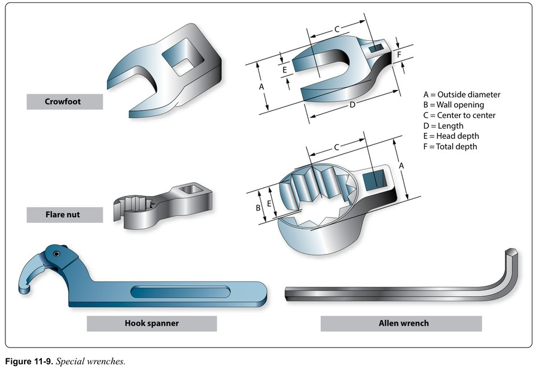
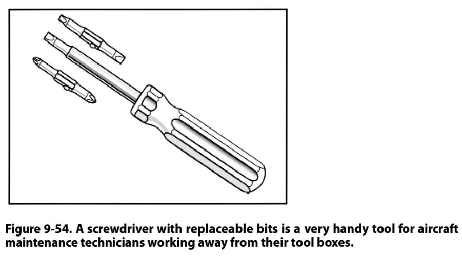
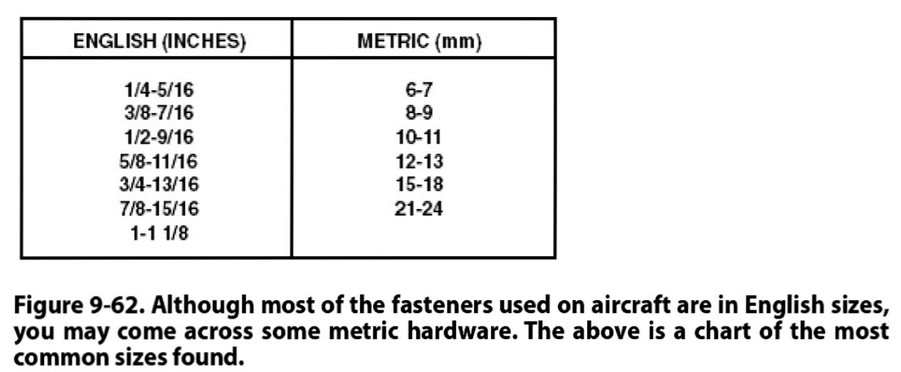
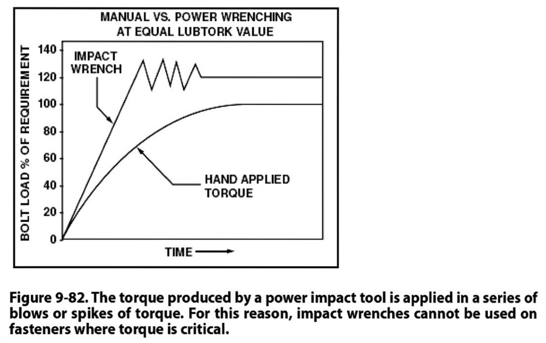
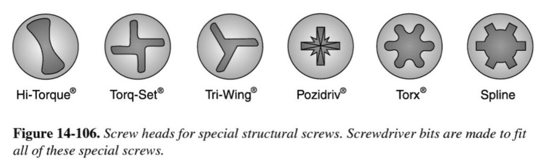
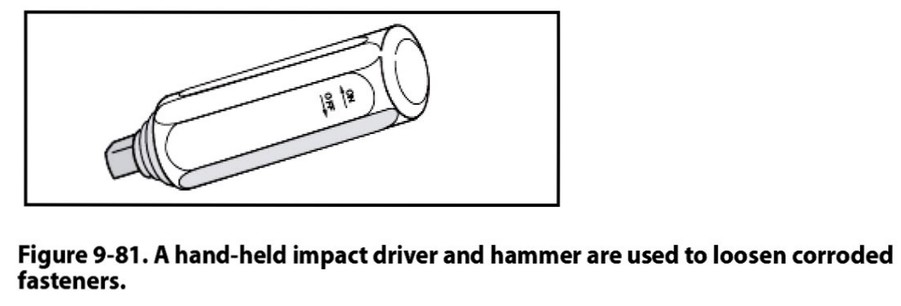
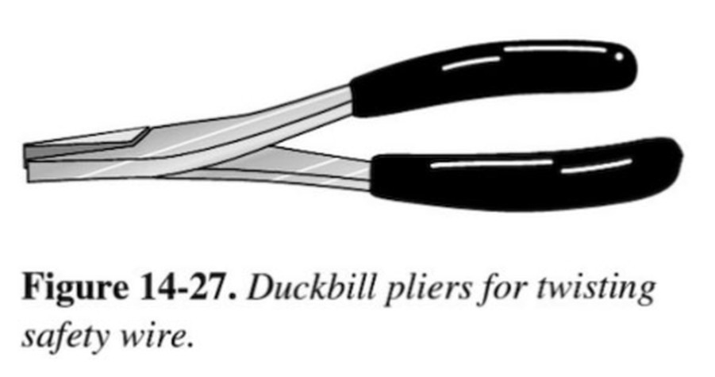
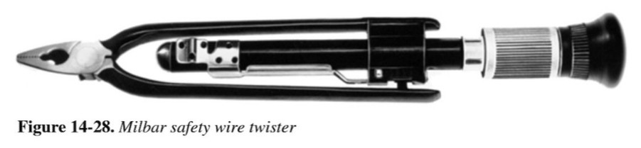
이물질손상(FOD)은 빠진 공구·부품이 엔진·기구에 들어가 큰 손상을 일으키는 것입니다. 섀도보드(Shadow Board)와 공구 대장으로 작업 전후 공구 수를 대조합니다.Foreign object damage (FOD) occurs when a lost tool/part enters an engine or mechanism. Shadow boards and tool logs are used to account for all tools before and after work.
작업 후 반드시 공구 정수(Inventory)를 확인하고, 분실 공구는 찾을 때까지 항공기를 복귀시키지 않습니다.Always inventory tools after work; if a tool is missing, do not return the aircraft to service until it is found.
작업 후 반드시 공구 정수(Inventory)를 확인하고, 분실 공구는 찾을 때까지 항공기를 복귀시키지 않습니다.
- A. 이물질 손상Foreign object damage
- B. 연료 과공급Fuel over-delivery
- C. 비행 운영 자료Flight ops data
- D. 고장 진단Fault diagnosis
- A. 섀도보드Shadow board
- B. 달력Calendar
- C. 라디오Radio
- D. 의자Chair
- A. 복귀 승인Return to service
- B. 찾을 때까지 복귀 금지Do not RTS until found
- C. 무시Ignore
- D. 새로 구매Buy a new one
정밀·토크 공구는 국가표준에 소급 가능한(Traceable) 방식으로 정기 교정하고, 교정 스티커로 유효기간을 표시합니다. 기한 지난 공구는 사용 금지입니다.Precision and torque tools are calibrated periodically, traceable to national standards, with a calibration sticker showing the due date. Do not use tools past due.
공구는 청결·건조하게 보관하고 부식·손상 여부를 점검합니다. 손상된 측정공구는 오차를 유발하므로 즉시 교체·수리합니다.Keep tools clean and dry and inspect for corrosion/damage. Damaged measuring tools cause errors and must be replaced/repaired promptly.
공구는 청결·건조하게 보관하고 부식·손상 여부를 점검합니다. 손상된 측정공구는 오차를 유발하므로 즉시 교체·수리합니다.
- A. 계속 사용Kept in use
- B. 교체·수리Replaced/repaired
- C. 도장Painted
- D. 방치Left alone
- A. 독성·티타늄 접촉 금지Is toxic and must not touch titanium
- B. 무해Harmless
- C. 윤활 향상Improves lubrication
- D. 강도 증가Adds strength
- A. 가격Price
- B. 교정 유효기간Calibration due date
- C. 제조국Country of origin
- D. 무게Weight
트위스트 드릴의 표준 선단각은 일반 강용 118°, 경질재용 135°입니다. 재질이 단단할수록 회전수는 낮추고 이송·냉각을 관리합니다.A twist drill's standard point angle is 118° for general steel and 135° for hard materials. Harder materials use lower RPM with managed feed and cooling.
리머(Reamer)는 구멍을 정밀 마무리하고, 카운터싱크는 접시머리 자리를 냅니다. 절삭공구는 날 상태를 점검해 과열·버(Burr)를 방지합니다.Reamers finish holes precisely and countersinks form flush-head seats. Inspect cutting edges to prevent overheating and burrs.
리머(Reamer)는 구멍을 정밀 마무리하고, 카운터싱크는 접시머리 자리를 냅니다. 절삭공구는 날 상태를 점검해 과열·버(Burr)를 방지합니다.
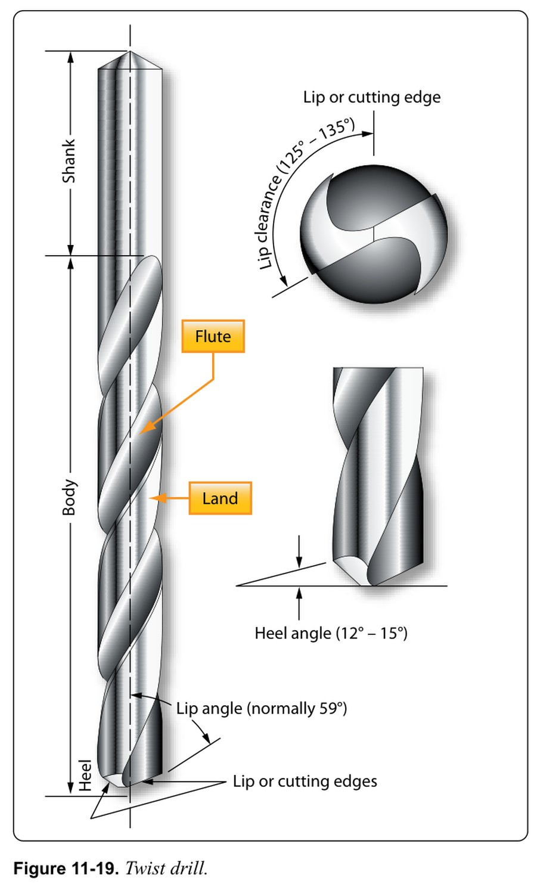
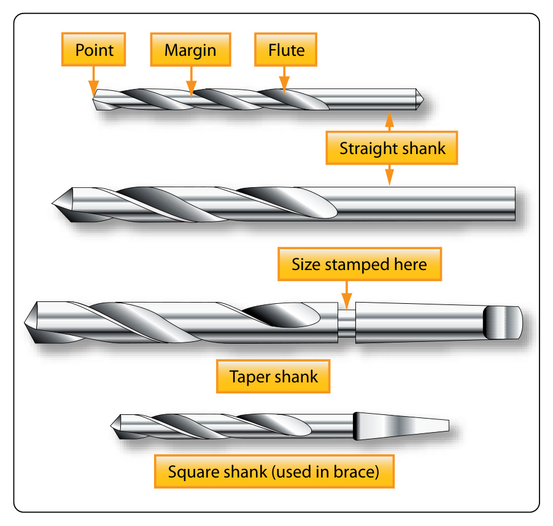
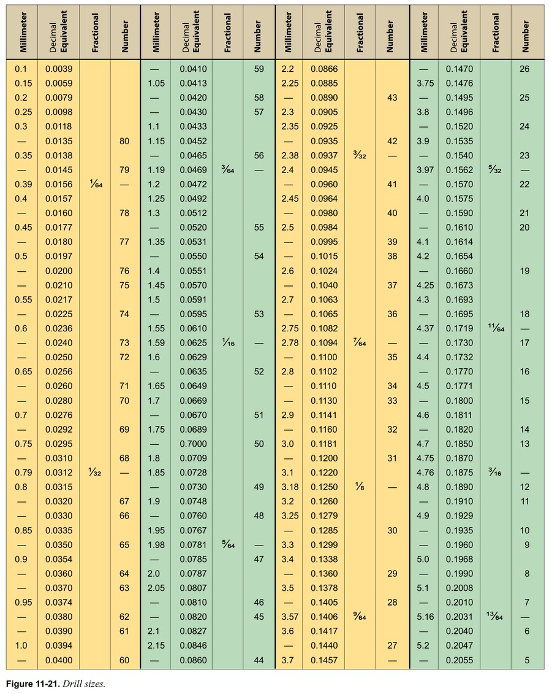
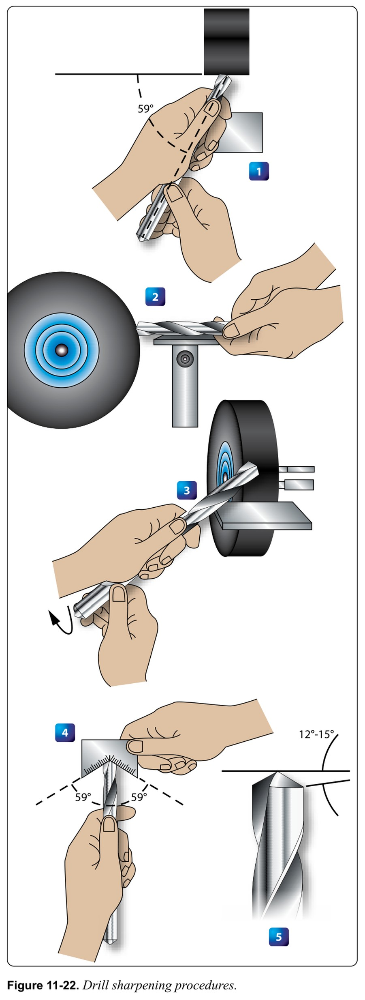
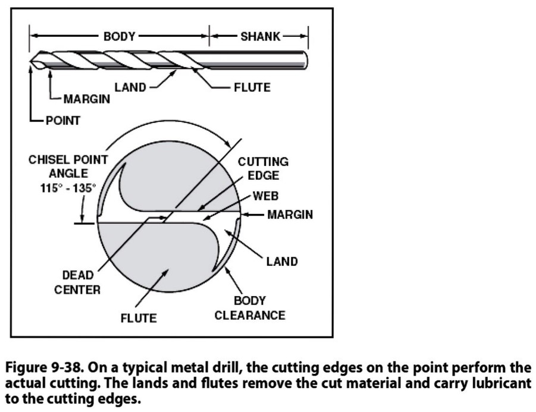
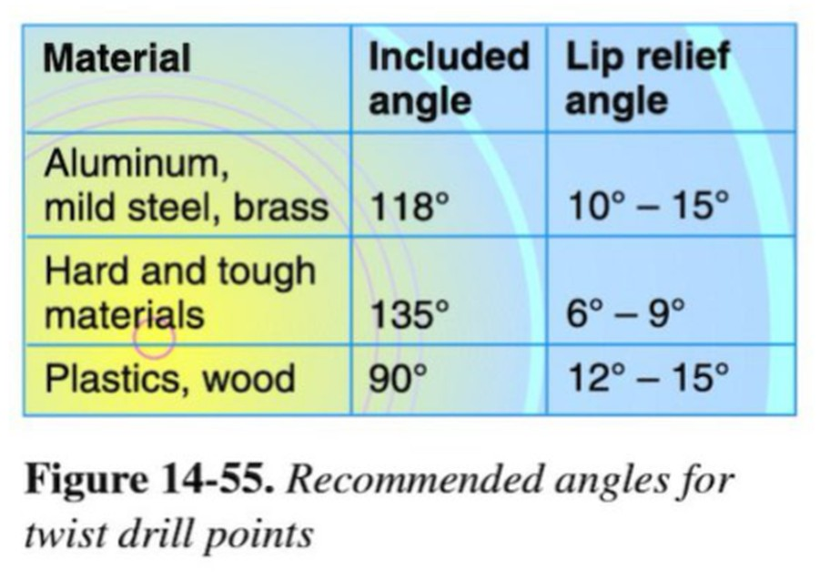
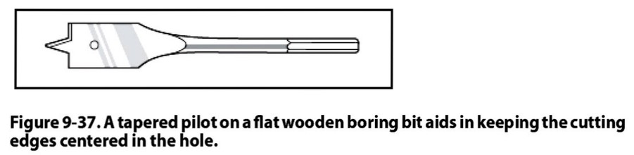
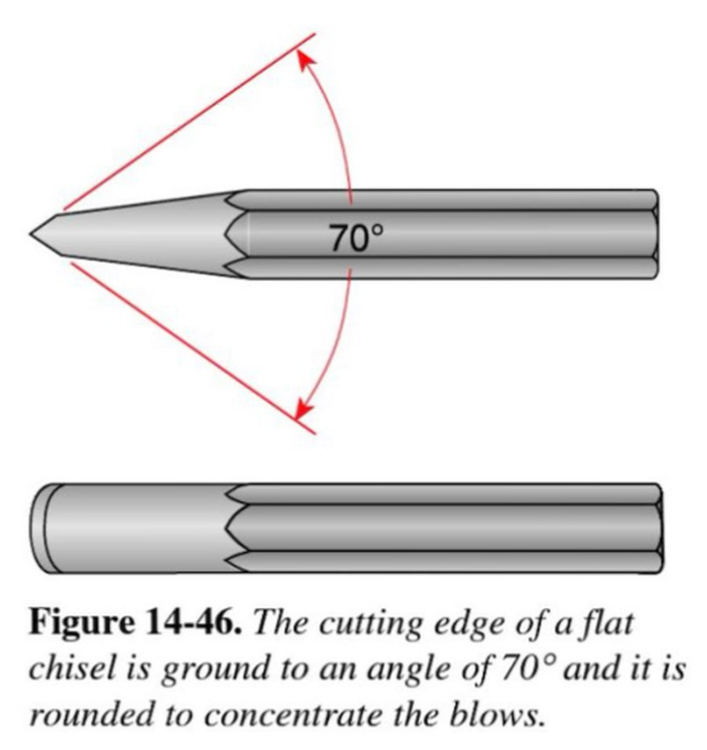
- A. 탭Tap
- B. 다이Die
- C. 리머Reamer
- D. 펀치Punch
- A. 118°118°
- B. 90°90°
- C. 135°135°
- D. 60°60°
스케일·컴바인네이션 스퀘어·디바이더·스크라이버·센터펀치로 절단·드릴 위치를 표시합니다. 알루미늄에는 재료 손상을 피해 부드러운 마킹을 씁니다.Scales, combination squares, dividers, scribers, and center punches lay out cut/drill locations. On aluminum, use gentle marking to avoid damaging the material.
정확한 레이아웃은 홀 정렬·엣지 마진·리벳 간격을 좌우해 구조 강도에 직접 영향을 줍니다.Accurate layout governs hole alignment, edge margin, and rivet spacing — directly affecting structural strength.
정확한 레이아웃은 홀 정렬·엣지 마진·리벳 간격을 좌우해 구조 강도에 직접 영향을 줍니다.
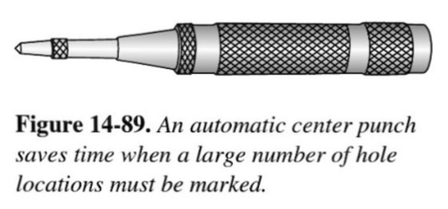
- A. 센터펀치Center punch
- B. 핀펀치Pin punch
- C. 끌Chisel
- D. 줄File
- A. 기계공 자(machinist scale)Machinist scale
- B. 표면 게이지Surface gauge
- C. 다이얼 인디케이터Dial indicator
- A. 스크라이버Scriber
- B. 해머Hammer
- C. 리머Reamer
- D. 탭Tap
멀티미터(전압·전류·저항), 크림핑 공구, 와이어 스트리퍼, 커넥터 삽입·추출 공구가 전기 정비의 기본입니다. 크림프는 규정 공구로 해야 접촉 신뢰성이 확보됩니다.A multimeter (voltage/current/resistance), crimping tools, wire strippers, and connector insertion/extraction tools are basics of electrical maintenance. Crimps must use the specified tool for reliable contact.
절연저항계(메거)는 절연 열화를, 본딩미터는 접지 저항을 측정합니다. 통전 회로 측정 시 감전·단락에 주의합니다.A megohmmeter (megger) measures insulation degradation and a bonding meter measures ground resistance. Guard against shock/shorts when measuring live circuits.
절연저항계(메거)는 절연 열화를, 본딩미터는 접지 저항을 측정합니다. 통전 회로 측정 시 감전·단락에 주의합니다.
손상·부적합 공구는 부상·부품 손상·FOD를 유발합니다. 올바른 크기·상태의 공구를 쓰고, 전동·공압 공구는 방호장치를 유지합니다.Damaged/wrong tools cause injury, part damage, and FOD. Use correct-size, sound tools and keep guards on power/pneumatic tools.
보안경·장갑·청력·호흡 보호구를 작업에 맞게 착용하고, 회전공구 사용 시 헐거운 옷·장신구를 피합니다.Wear eye, hand, hearing, and respiratory PPE as appropriate, and avoid loose clothing/jewelry around rotating tools.
보안경·장갑·청력·호흡 보호구를 작업에 맞게 착용하고, 회전공구 사용 시 헐거운 옷·장신구를 피합니다.
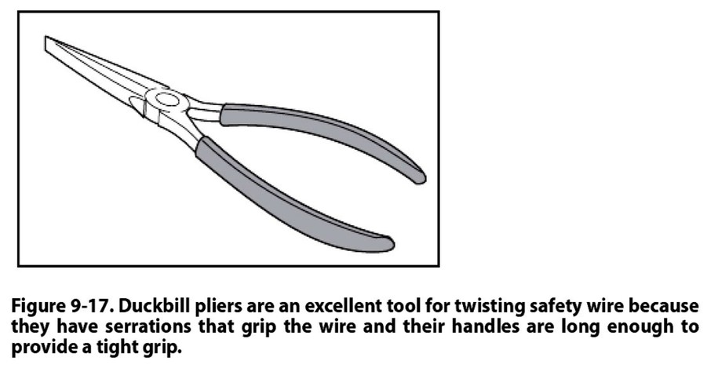
정밀 측정공구: 마이크로미터·버니어 📙 Jeppesen 참고
Precision Measuring: Micrometer & Vernier마이크로미터는 나사의 회전으로 미세거리를 읽습니다. 인치식은 심블 1회전=0.025인치, 눈금 25등분으로 0.001인치를 읽고, 버니어 마이크로미터는 0.0001인치까지 읽습니다.A micrometer reads small distances by screw rotation. On an inch mic one thimble turn = 0.025 in, divided into 25 marks for 0.001 in; a vernier micrometer reads to 0.0001 in.
버니어 캘리퍼는 주척과 부척(버니어)의 눈금차로 0.001인치를 읽으며 내경·외경·깊이를 잽니다. 사용 전 영점(zero)을 확인하고 온도·측정압력을 일정하게 유지합니다.A vernier caliper reads 0.001 in from the difference between main and vernier scales and measures inside, outside, and depth. Check zero before use and keep temperature and gauging pressure consistent.
버니어 캘리퍼스는 주 눈금과 일치하는 버니어 선을 찾아 읽습니다.
⚠ 두 공구 모두 사용 전 영점 확인과 표준기 대조가 필요합니다. 수 천분의 1인치만 틀어져도 폐기해야 할 부품을 합격시킵니다. 측정면을 손으로 오래 쥐면 체온으로 값이 변합니다.
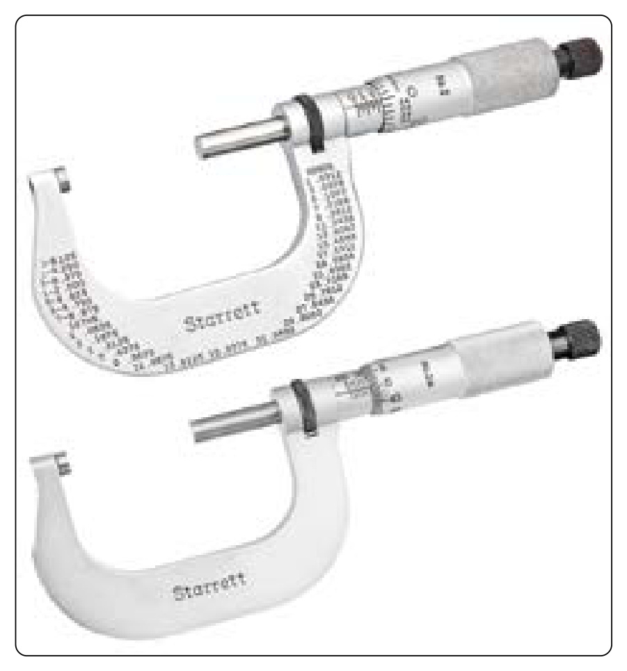
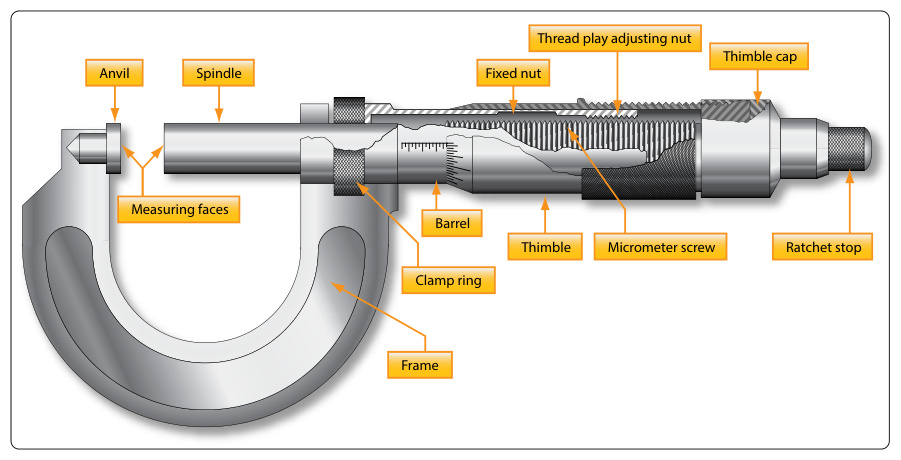
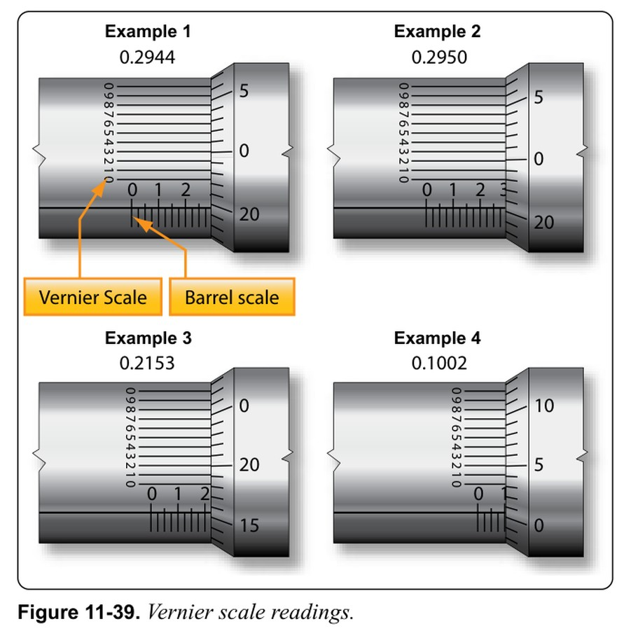
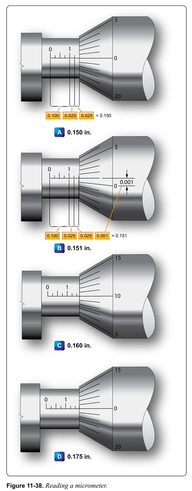
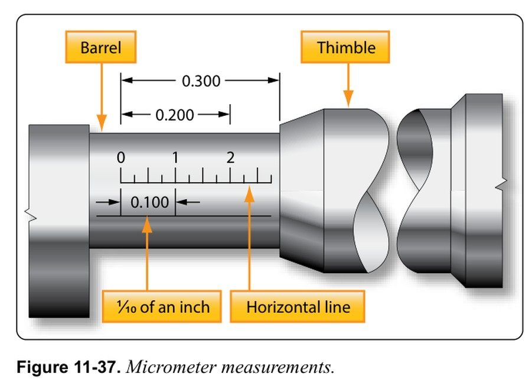
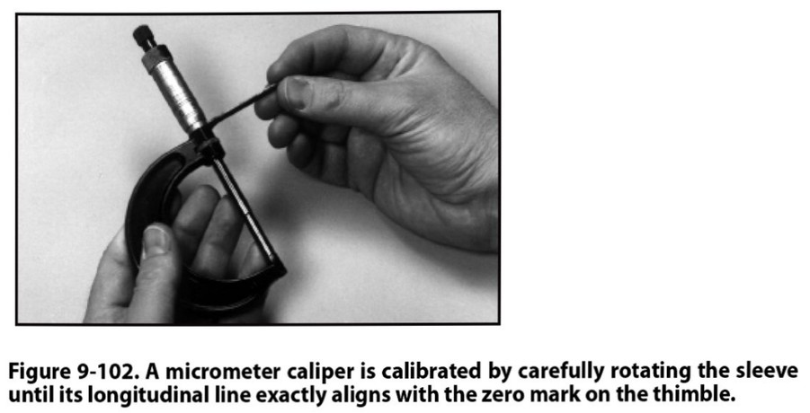
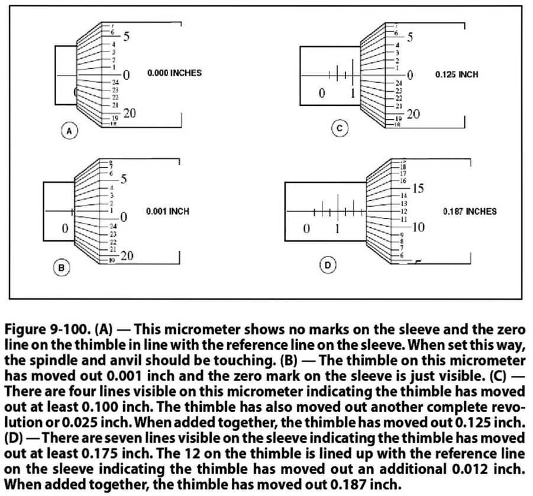
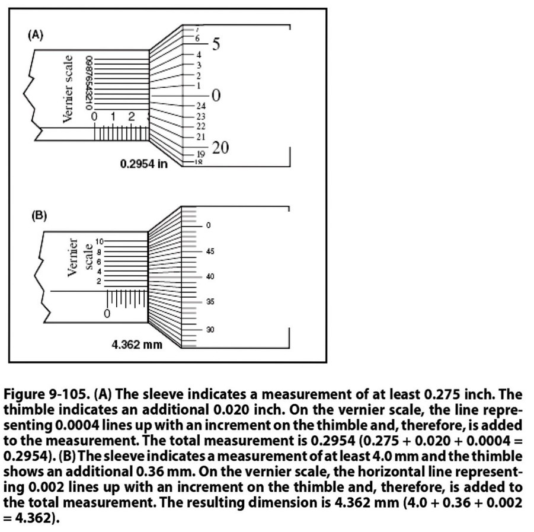
- A. 외경 마이크로미터는 지름 측정에만 한정된다An outside micrometer is limited to measuring diameters
- B. 인증기체용 공구는 승인형식이어야 한다Tools used on certificated aircraft must be an approved type
- C. 디바이더는 측정도구로 쓸 때 값을 직접 읽어주지 않는다Dividers do not provide a reading when used as a measuring device
- A. 깊이 게이지와 마이크로미터Depth gauge and micrometer
- B. 두께 게이지와 압입 아버Thickness gauge and push-fit arbor
- C. 텔레스코픽 게이지와 마이크로미터Telescopic gauge and micrometer
- A. 0.025 in0.025 in
- B. 0.001 in0.001 in
- C. 0.100 in0.100 in
- D. 0.010 in0.010 in
- A. 나사 피치각Thread pitch angle
- B. 외경Outside diameter
- C. 내경Inside diameter
- D. 깊이Depth
- A. .00001 인치.00001
- B. .001 인치.001
- C. .0001 인치.0001
다이얼 인디케이터와 레이아웃 공구 📙 Jeppesen 참고
Dial Indicator & Layout Tools다이얼 인디케이터는 런아웃(runout)·평면도·유격을 비교측정합니다. 프로펠러 트랙, 브레이크 디스크 휨, 크랭크축 흔들림 점검에 씁니다.A dial indicator makes comparative measurements of runout, flatness, and play — used to check propeller track, brake-disc warp, and crankshaft wobble.
레이아웃 공구(스크라이버·컴비네이션 스퀘어·센터펀치·서피스 게이지)로 절단·드릴 위치를 표시합니다. 정밀공구는 떨어뜨리거나 다른 공구와 섞어 두면 정확도를 잃으므로 별도 보관·교정합니다.Layout tools (scriber, combination square, center punch, surface gauge) mark cut and drill locations. Precision tools lose accuracy if dropped or mixed with others, so store separately and calibrate.
⚠ 스탠드가 흔들리면 그 흔들림이 부품 움직임으로 읽힙니다. 반드시 견고하게 고정하십시오.
레이아웃 공구(스크라이브·디바이더·스퀘어)는 치수를 재료에 옮깁니다.
⚠ 구조재에 그은 스크라이브 선은 응력 집중점이 됩니다. 그래서 금긋기는 잘라낼 쪽에만 합니다.
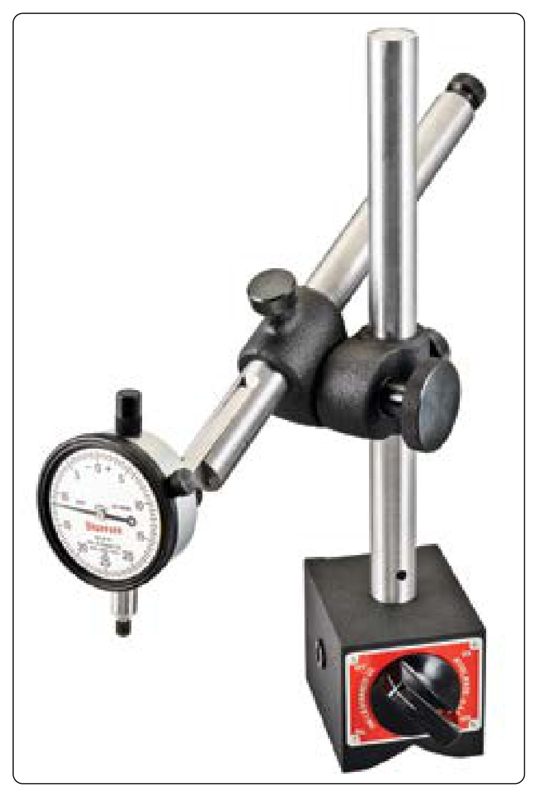
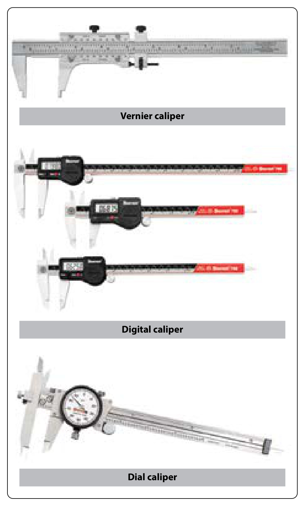
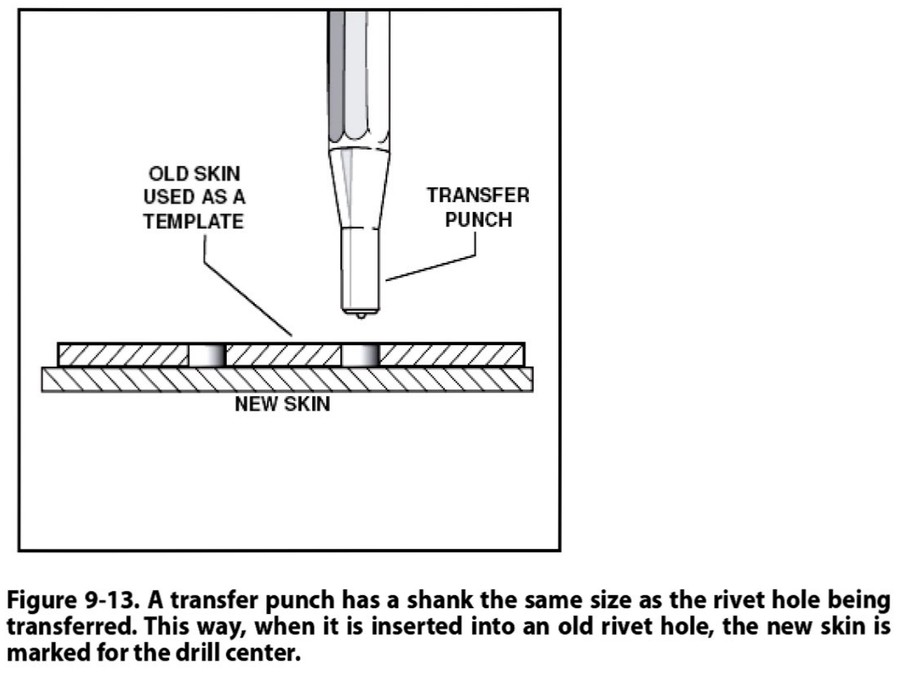
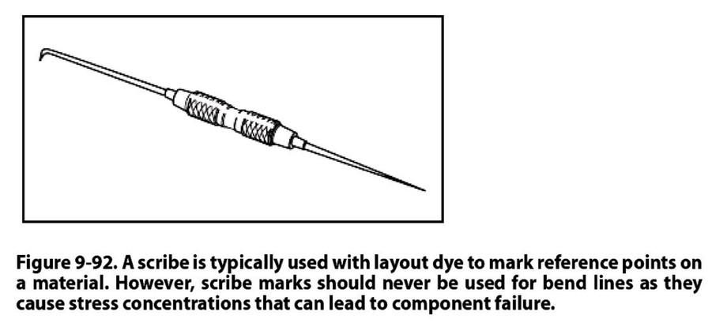
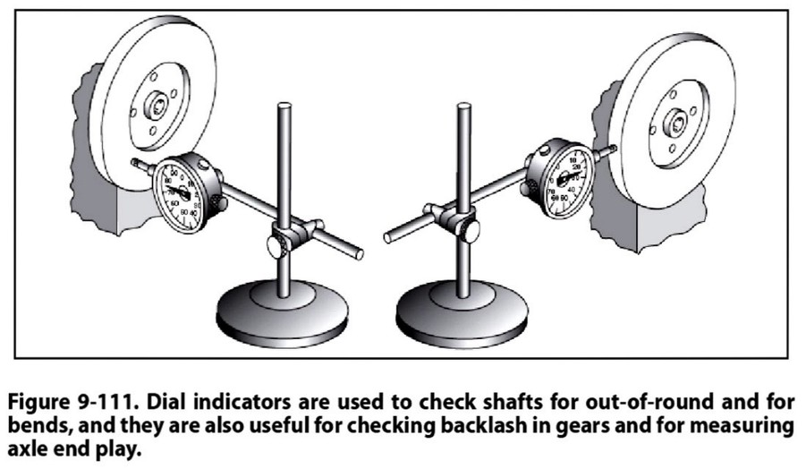
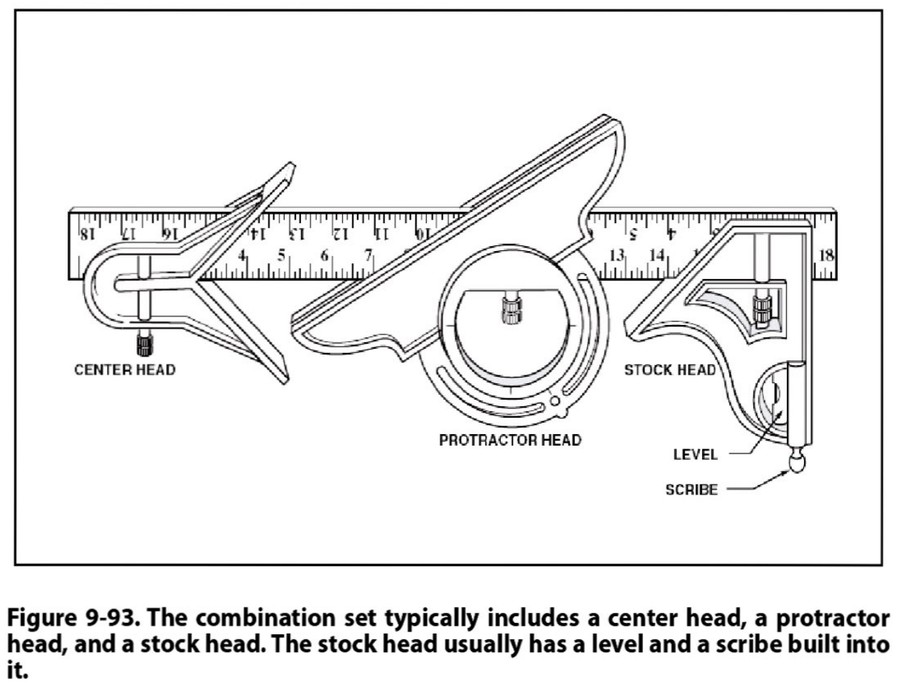
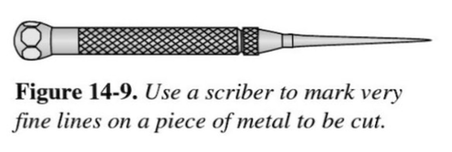
- A. 다이얼 게이지Dial gauge
- B. 마이크로미터 캘리퍼Micrometer caliper
- C. 깊이 게이지Depth gauge
- A. 다이얼 게이지dial gauge
- B. 하이트 게이지height gauge
- C. 두께 게이지thickness gauge
- A. 깊이 게이지Depth gauge
- B. 두께(필러) 게이지Thickness gauge
- C. 다이얼 인디케이터Dial indicator
- A. 게이지 블록Gauge block
- B. 다이얼 인디케이터Dial indicator
- C. 기계공 자Machinist scale
망치·말렛·펀치 📙 Jeppesen · 📗 ASA 참고
Hammers, Mallets & Punches볼핀 해머(Ball peen)는 평평한 면(face)과 둥근 볼(peen)을 가진, 정비 현장의 기본 해머입니다. 크로스핀 해머는 쐐기가 손잡이와 직각, 스트레이트핀 해머는 손잡이와 평행입니다. 판금을 펴거나 성형할 때는 바디 해머나 연질 말렛(고무·플라스틱·생가죽)을 써서 표면에 자국을 남기지 않습니다.The ball peen hammer, with a flat face and a rounded peen, is the basic shop hammer. A cross peen hammer has its wedge at a right angle to the handle; a straight peen hammer has it parallel. To smooth or form sheet metal, use a body hammer or a soft-faced mallet (rubber, plastic, rawhide) so the surface is not marked.
펀치는 용도로 구분합니다. 프릭 펀치(Prick)는 가벼운 타격으로 기준점을 찍고, 센터 펀치는 드릴 시작점을 만듭니다. 리벳이나 핀을 뺄 때는 끝이 테이퍼진 스타팅 펀치로 먼저 풀어낸 뒤, 섕크 굵기가 일정한 핀 펀치로 끝까지 밀어냅니다. 펀치 머리는 둥근 크라운 형태를 유지해야 갈라지거나 부스러지지 않습니다.Punches are classed by job. A prick punch marks reference points with a light blow, and a center punch starts drill holes. To remove a rivet or pin, break it loose with a tapered starting punch, then drive it out with a uniform-shank pin punch. Keep the striking end crowned so it does not split or chip.
🔧 현장 팁 — 해머 면은 펀치 머리보다 커야 정타가 됩니다. 버섯처럼 퍼진 펀치 머리는 그라인더로 다듬어 쓰십시오. 그대로 치면 쇳조각이 튀어 눈을 다칩니다. 항공기 구조물 근처에서는 강철 해머가 아니라 연질 말렛을 기본으로 생각하십시오.🔧 Field tip — The hammer face should be larger than the punch head for a square blow. Grind mushroomed punch heads before use — struck as-is, they throw chips into eyes. Around aircraft structure, make a soft-faced mallet your default, not a steel hammer.
펀치 순서: 프릭(금긋기) → 센터(드릴 시작) / 제거는 스타팅 → 핀 펀치.
⚠ 버섯머리 펀치는 다듬은 뒤 사용 — 파편이 튑니다.
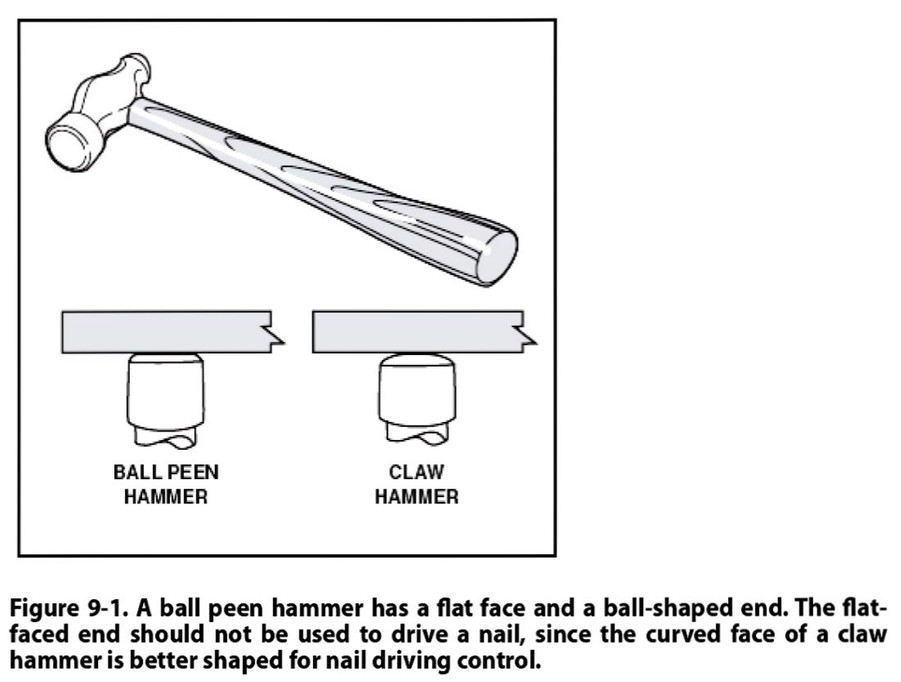
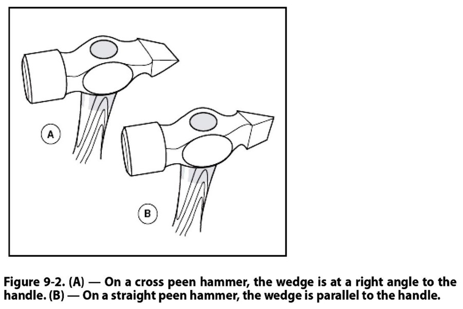
- A. 핀 펀치Pin punch
- B. 센터 펀치Center punch
- C. 스타팅 펀치Starting punch
- A. 핀 펀치로 풀고 스타팅 펀치로 밀어냄Loosen with a pin punch, then drive out with a starting punch
- B. 센터 펀치 하나로 끝까지 밀어냄Drive it all the way out with a center punch
- C. 스타팅 펀치로 풀고 핀 펀치로 밀어냄Loosen with a starting punch, then drive out with a pin punch
- A. 연질 말렛(고무·플라스틱·생가죽)Soft-faced mallet (rubber, plastic, rawhide)
- B. 크로스핀 해머Cross peen hammer
- C. 볼핀 해머의 볼The peen of a ball peen hammer
플라이어와 바이스 📙 Jeppesen · 📗 ASA 참고
Pliers & Vises가장 흔한 것은 6인치 슬립조인트 플라이어입니다. 인터로킹(워터펌프) 플라이어는 조 간격을 여러 단계로 바꿀 수 있고, 니들노즈는 좁은 곳에서 작은 부품을 잡습니다. 바이스그립(VISE-GRIP)은 물린 채로 고정되어 손을 놓아도 됩니다. 플라이어는 잡고·구부리고·자르는 공구이지 너트를 돌리는 공구가 아닙니다.The six-inch slip-joint pliers is the most common size. Interlocking (water pump) pliers offer several jaw openings, and needle-nose pliers hold small parts in tight spots. VISE-GRIP pliers lock onto the work so it can be released by hand. Pliers grip, bend, and cut — they are not for turning nuts.
다이애거널 커터(니퍼)는 꼬인 안전결선을 자르는 데 가장 많이 씁니다. 벤치 바이스와 드릴프레스 바이스는 작업물을 단단히 고정해 손을 자유롭게 합니다. 알루미늄·구리처럼 무른 부품을 바이스에 물릴 때는 연질 조 커버를 씌웁니다.Diagonal cutters are used most often to clip twisted safety wire. Bench vises and drill-press vises hold work firmly and free both hands. When clamping soft parts such as aluminum or copper, fit soft jaw covers.
🔧 현장 팁 — 너트나 볼트 머리를 플라이어로 돌리면 모서리가 뭉개져 다음에 렌치가 맞지 않습니다. 바이스그립은 조이는 힘이 매우 커서 튜브나 얇은 부품을 찌그러뜨립니다(그림 9-16). 안전결선을 자를 때는 잘린 끝이 튀지 않도록 손으로 감싸고 자르십시오.🔧 Field tip — Turning a nut or bolt head with pliers rounds its corners so a wrench will no longer fit. VISE-GRIP jaws clamp hard enough to crush tubing and thin parts (Figure 9-16). When cutting safety wire, cover the cut end with your hand so it cannot fly.
⚠ 플라이어로 너트를 돌리지 않습니다.
무른 금속은 바이스에 연질 조 커버를 씌워 고정합니다.
- A. 니들노즈 플라이어Needle-nose pliers
- B. 다이애거널 커터Diagonal cutters
- C. 슬립조인트 플라이어Slip-joint pliers
- A. 토크가 너무 작게 걸린다They apply too little torque
- B. 나사산이 늘어난다They stretch the threads
- C. 너트 모서리가 뭉개져 렌치가 맞지 않게 된다They round the corners so a wrench no longer fits
- A. 연질 조 커버를 씌운다Fit soft jaw covers
- B. 조를 최대한 세게 조인다Clamp the jaws as tightly as possible
- C. 바이스그립으로 대신 잡는다Hold it with VISE-GRIP pliers instead
끌과 줄 📙 Jeppesen · 📗 ASA 참고
Chisels & Files끌(Chisel)은 날 모양으로 구분합니다. 케이프 치즐은 좁은 홈을 파거나, 드릴로 뚫은 리벳 머리를 따낼 때 씁니다. 다이아몬드 포인트는 V자 홈을, 라운드 노즈는 홈 바닥의 둥근 모서리(R)를 깎습니다.Chisels are classed by edge shape. A cape chisel cuts narrow grooves and removes a rivet head after it has been drilled. A diamond-point chisel cuts V-grooves, and a round-nose chisel cuts radii in the bottom of grooves.
줄(File)의 각부 명칭은 탱(tang)·힐(heel)·면(face)·모서리(edge)·끝(point)이고, 길이는 힐부터 끝까지 잽니다. 눈은 단목(single-cut)과 복목(double-cut)이 있으며, 줄은 종류·길이·눈의 거칠기로 분류합니다. 크로스 파일링은 줄을 길이 방향으로 밀어 많이 깎고, 드로 파일링은 줄을 옆으로 잡고 당겨 매끈하게 마무리합니다.A file's parts are the tang, heel, face, edge, and point, and its length is measured from heel to point. Files are single-cut or double-cut and are classed by kind, length, and cut. Cross filing pushes the file lengthwise to remove metal quickly; draw filing moves it sideways for a smooth finish.
🔧 현장 팁 — 줄은 밀 때만 깎이므로 당길 때는 힘을 빼십시오. 손잡이 없이 탱을 잡으면 손바닥을 찔립니다. 알루미늄 찌꺼기로 막힌 눈은 파일 카드로 청소해야 긁힘이 생기지 않습니다. 끌 작업 때는 보안경이 필수입니다.🔧 Field tip — A file cuts only on the push stroke, so lift pressure on the return. Never use a file without a handle — the tang can pierce your palm. Clean aluminum-clogged teeth with a file card to avoid gouging. Always wear eye protection when chiseling.
줄: 단목·복목 / 크로스 = 많이 깎기, 드로 = 마무리.
⚠ 줄은 미는 방향에서만 깎입니다.
- A. 라운드 노즈 치즐Round-nose chisel
- B. 케이프 치즐Cape chisel
- C. 다이아몬드 포인트 치즐Diamond-point chisel
- A. 당길 때The return (pull) stroke
- B. 양방향 모두Both strokes
- C. 밀 때The forward (push) stroke
- A. 드로 파일링Draw filing
- B. 크로스 파일링Cross filing
- C. 로터리 파일링Rotary filing
톱과 판금 절단공구 📙 Jeppesen · 📗 ASA 참고
Saws, Snips & Shears크로스컷 톱은 이가 칼처럼 나뭇결을 끊습니다. 백소(Backsaw)는 날이 곧아 정밀 부품을 자르고, 키홀(컴퍼스) 톱은 작은 구멍에서 시작해 큰 구멍을 넓힙니다. 쇠톱(Hacksaw) 날은 재료에 항상 이가 두 개 이상 걸리도록 고르고, 날은 밀 때 자르도록 앞쪽을 향하게 끼웁니다. 판재 곡선은 컨투어 밴드쏘로 자릅니다.Crosscut saw teeth act as knives across the wood fibers. A backsaw cuts very straight for precision parts, and a keyhole (compass) saw enlarges a small starting hole. Choose a hacksaw blade so at least two teeth rest on the work at all times, and mount it to cut on the push stroke. Curves in sheet stock are cut on a contour band saw.
판금은 틴 스닙(직선·곡선), 항공 스닙, 스로틀리스 쉬어, 컴파운드 쉬어로 자릅니다. 항공 스닙은 손잡이 색으로 구분합니다. 노랑 = 직선, 빨강 = 왼쪽 곡선, 초록 = 오른쪽 곡선입니다. 모양으로도 구분할 수 있는데, 오른쪽 커팅용은 손에 쥐었을 때 아래 조가 오른쪽에 있습니다.Sheet metal is cut with tin snips (straight or curved), aviation snips, throatless shears, and compound shears. Aviation snips are color-coded: yellow for straight, red for left, green for right. They can also be told by shape — on right-cut snips the lower jaw is on the right when held in the hand.
🔧 현장 팁 — 쇠톱은 밀 때 자르고 당길 때 힘을 빼며, 천천히 일정하게 켜야 날이 오래갑니다. 스닙으로 자른 판재 가장자리에는 버(burr)와 미세한 찢김이 남습니다. 최종선에서 여유를 두고 자른 뒤 줄로 다듬고 디버링하십시오. 다듬지 않은 가장자리는 균열의 출발점이 됩니다.🔧 Field tip — Cut on the push stroke, ease off on the return, and keep a slow, steady pace to make blades last. Snip-cut edges carry burrs and tiny tears — cut short of the final line, then file and deburr. An undressed edge is where cracks start.
항공 스닙: 노랑 직선 · 빨강 좌 · 초록 우.
⚠ 스닙 절단면은 반드시 줄·디버링 — 균열의 출발점.
- A. 재료와 관계없이 가장 거친 날The coarsest blade regardless of material
- B. 재료에 항상 이가 두 개 이상 걸리도록So at least two teeth always rest on the work
- C. 재료 두께보다 이 간격이 넓은 날A blade with tooth spacing wider than the stock
- A. 직선 절단Straight cuts
- B. 왼쪽 곡선 절단Left cuts
- C. 오른쪽 곡선 절단Right cuts
- A. 밀 때 자르도록To cut on the push stroke
- B. 당길 때 자르도록To cut on the pull stroke
- C. 방향은 상관없다Direction does not matter
드릴 비트와 드릴 크기 📙 Jeppesen · 📗 ASA 참고
Drill Bits & Drill Sizes트위스트 드릴은 섕크·바디·플루트·선단(point)·립(lip)·마진으로 이루어집니다. 크기는 분수(인치), 번호(No.80~No.1), 문자(A~Z), 밀리미터 네 가지로 표기하며, 드릴 게이지 구멍에 넣어 확인합니다. 재연삭할 때는 드릴 포인트 게이지로 선단각과 두 립의 길이를 맞춰야 구멍이 정확하게 뚫립니다.A twist drill has a shank, body, flutes, point, lips, and margin. Sizes are given four ways — fractional inches, number (No. 80 to No. 1), letter (A to Z), and millimeters — and checked in a drill gage. When regrinding, use a drill point gage to match the point angle and both lip lengths, or the hole will not be true.
재료에 따라 비트도 다릅니다. 목재에는 오거·포스너·평날 보링 비트를, 케블라에는 보풀이 남지 않는 브래드포인트 드릴을, 그래파이트 복합재에는 스페이드 드릴을 씁니다. 드릴 속도표에서 보듯 구멍이 클수록, 재료가 단단할수록 회전수를 낮춥니다.Bits vary with material: auger, Forstner, and flat boring bits for wood; brad-point drills for Kevlar, which leave no fuzz; and spade drills for graphite composites. As the speed chart shows, larger holes and harder materials call for lower RPM.
🔧 현장 팁 — 리벳 구멍은 리벳보다 약간 크게 뚫습니다. 자주 쓰는 조합은 3/32인치 리벳 = No.40, 1/8인치 = No.30, 5/32인치 = No.21, 3/16인치 = No.11입니다. 두 립 길이가 다르면 한쪽 립만 깎아 구멍이 커지고 둥글지 않게 됩니다.🔧 Field tip — Rivet holes are drilled slightly oversize. Common pairs: 3/32-in rivet = No. 40, 1/8-in = No. 30, 5/32-in = No. 21, 3/16-in = No. 11. Unequal lip lengths make one lip do all the cutting, giving an oversize, out-of-round hole.
⚠ 두 립 길이·각도가 같아야 구멍이 정확합니다.
케블라 = 브래드포인트, 그래파이트 = 스페이드.
- A. No.40No. 40
- B. No.30No. 30
- C. No.21No. 21
- A. 스페이드 드릴Spade drill
- B. 오거 비트Auger bit
- C. 브래드포인트 드릴Brad-point drill
- A. 구멍이 커지고 둥글지 않게 된다The hole is oversize and out of round
- B. 구멍이 작아진다The hole is undersize
- C. 아무 영향이 없다There is no effect
리머·홀커터·카운터싱크 📙 Jeppesen · 📗 ASA 참고
Reamers, Hole Cutters & Countersinks리머(Reamer)는 드릴로 약간 작게 뚫은 구멍을 최종 치수로 매끈하게 다듬습니다. 테이퍼·바텀링 같은 고정식 리머는 한 가지 크기만 깎고, 확장식(Expansion) 리머는 하나로 여러 크기를 맞출 수 있습니다.A reamer finishes a slightly undersize drilled hole to final size and smoothness. Fixed reamers such as tapered and bottoming reamers cut only one size; an expansion reamer can be set to several sizes.
큰 구멍은 홀소(Hole saw)로 뚫는데, 시작 전에 중심을 표시합니다. 플라이커터는 지름을 조절하는 대구경 커터로 드릴프레스에서만 씁니다. 스톱 카운터싱크는 깊이를 고정해 접시머리 리벳 자리를 일정하게 냅니다.Large holes are cut with a hole saw after marking the center. A fly cutter is an adjustable large-diameter cutter, used only in a drill press. A stop countersink sets a fixed depth so flush-rivet seats come out uniform.
🔧 현장 팁 — 리머는 절삭 방향으로만 돌리십시오. 거꾸로 돌리면 날이 무뎌지고 칩이 끼어 구멍 벽을 긁습니다. 카운터싱크는 먼저 시편에서 깊이를 맞춰 보십시오. 판이 리벳 머리 높이보다 얇으면 깎지 말고 딤플링(Dimpling)으로 성형해야 합니다.🔧 Field tip — Turn a reamer only in the cutting direction; reversing it dulls the edges and drags chips along the bore. Set countersink depth on a test piece first. If the sheet is thinner than the rivet head is high, dimple it instead of countersinking.
⚠ 리머 역회전 금지.
⚠ 판이 얇으면 카운터싱크 대신 딤플링.
- A. 빼낼 때는 반대로 돌린다Reverse it to withdraw it
- B. 절삭 방향으로만 돌린다Turn it only in the cutting direction
- C. 양방향으로 번갈아 돌린다Alternate directions
- A. 테이퍼 리머Tapered reamer
- B. 바텀링 리머Bottoming reamer
- C. 확장식 리머Expansion reamer
- A. 딤플링(Dimpling)한다Dimpled
- B. 깊게 카운터싱크한다Countersunk deeply
- C. 얕게 카운터싱크한다Countersunk shallowly
탭·다이와 나사산 표 📙 Jeppesen · 📗 ASA 참고
Taps, Dies & Thread Charts탭(Tap)은 암나사를, 다이(Die)는 수나사를 깎습니다. 탭은 끝이 길게 테이퍼진 것부터 테이퍼 → 플러그 → 바텀링 순으로 쓰며, 바텀링 탭은 막힌 구멍 바닥까지 나사를 냅니다. 조절식 다이는 다이스톡에 끼워 돌립니다.Taps cut internal threads and dies cut external threads. Taps are used in order — taper, plug, then bottoming — and a bottoming tap threads to the bottom of a blind hole. An adjustable die is turned in a diestock.
탭을 내기 전 구멍은 탭 드릴 표로 고르고, 볼트가 그냥 지나가는 구멍은 바디 드릴 크기로 뚫습니다. 나사는 UNC(거친 나사)·UNF(가는 나사)·NPT(테이퍼 파이프 나사)·미터 나사로 나뉘고, 인치 나사는 인치당 나사산 수로 표기합니다.The hole for a tap is chosen from a tap drill chart; a clearance hole for a bolt uses the body drill size. Threads are UNC (coarse), UNF (fine), NPT (taper pipe), or metric, and inch threads are given in threads per inch.
🔧 현장 팁 — 탭은 반~한 바퀴 돌리고 1/4바퀴 되돌려 칩을 끊으십시오. T-핸들은 양손으로 고르게 눌러야 하며, 기울면 탭이 부러집니다. 부러진 탭은 빼기가 매우 어렵습니다. 예로 1/4-20 UNC는 No.7, 1/4-28 UNF는 No.3 드릴이 표준 탭 드릴입니다.🔧 Field tip — Turn a tap a half to one turn, then back off a quarter turn to break the chip. Press evenly on both sides of the T-handle — a tilted tap breaks, and a broken tap is very hard to remove. For example, the standard tap drill is No. 7 for 1/4-20 UNC and No. 3 for 1/4-28 UNF.
구멍 크기는 탭 드릴 표로 고릅니다.
⚠ 1/4바퀴 되돌려 칩 끊기 / 탭이 기울면 부러집니다.
- A. 테이퍼 탭Taper tap
- B. 바텀링 탭Bottoming tap
- C. 플러그 탭Plug tap
- A. 나사산 피치를 맞추려고To set the thread pitch
- B. 탭을 식히려고To cool the tap
- C. 칩을 끊어 배출하려고To break and clear the chip
- A. 탭 드릴 표From a tap drill chart
- B. 볼트 지름과 같게Equal to the bolt diameter
- C. 바디 드릴 크기The body drill size
드라이버 📙 Jeppesen · 📗 ASA 참고
Screwdrivers일자(Slot) 드라이버 날은 옆면이 평행하게 연마되어 있어야 하고, 나사 홈 폭의 약 75% 이상을 채워야 합니다. 십자 나사는 끝이 비교적 뭉툭한 필립스(Phillips)와 끝이 뾰족한 리드앤프린스(Reed & Prince)가 있으며, 서로 바꿔 쓰면 안 됩니다. 트라이윙(TRI-WING)은 날개가 세 개인 특수 나사입니다.A slot screwdriver blade must be ground with parallel sides and fill about 75 percent of the slot width. Recessed heads include the Phillips, with a relatively blunt point, and the sharper Reed & Prince; the two are not interchangeable. TRI-WING screws have three wings.
손이 들어가지 않는 곳에는 오프셋 드라이버를 씁니다. 에어 드라이버는 사용 전에 토크(클러치) 설정법을 알아야 하고, 핸드 임팩트 드라이버는 해머로 쳐서 굳은 나사를 풉니다.An offset screwdriver reaches screws where there is no straight access. Learn the torque (clutch) setting of an air-driven screwdriver before use, and use a hand-impact driver, struck with a hammer, to loosen stubborn screws.
🔧 현장 팁 — 맞지 않는 날은 미끄러지며(캠아웃) 나사 머리를 뭉갭니다. 머리가 손상된 나사는 재사용하지 말고 교체하십시오. 에어 드라이버는 클러치를 낮게 두고 돌린 뒤 마지막 조임은 손으로 하는 것이 안전합니다.🔧 Field tip — A poorly fitting tip cams out and chews up the head; replace damaged screws rather than reuse them. With an air driver, keep the clutch low and do the final tightening by hand.
⚠ 필립스 ↔ 리드앤프린스 혼용 금지.
굳은 나사는 핸드 임팩트 드라이버로.
- A. 50%50 percent
- B. 75%75 percent
- C. 100%보다 넓게Wider than the slot
- A. 서로 바꿔 써도 된다They are interchangeable
- B. 리드앤프린스는 일자 나사용이다Reed & Prince is for slotted screws
- C. 서로 바꿔 쓰면 안 된다They are not interchangeable
- A. 핸드 임팩트 드라이버Hand-impact driver
- B. 오프셋 드라이버Offset screwdriver
- C. 최대 토크로 맞춘 에어 드라이버Air driver set to maximum torque
렌치의 종류 📙 Jeppesen · 📗 ASA 참고
Types of Wrenches렌치 크기는 볼트 머리나 너트의 맞변 거리(across flats)로 잽니다. 오픈엔드 렌치 머리는 보통 15° 기울어 있어(일부는 30~60°) 뒤집어 가며 좁은 곳에서 돌립니다. 박스엔드는 너트를 감싸서 덜 미끄러지고, 콤비네이션 렌치는 한쪽은 오픈엔드, 한쪽은 박스엔드입니다.Wrench size is measured across the flats of the bolt head or nut. Open-end wrench heads are usually set at 15 degrees (some at 30 to 60), so flipping the wrench lets it work in tight spots. A box-end wrench encloses the nut and is less likely to slip; a combination wrench has one of each.
플레어너트 렌치는 튜브가 지나갈 슬롯이 있는 박스형이라 B-너트를 감싸 잡고, 핸들 15°마다 너트를 다시 물 수 있어 좁은 곳에 좋습니다. 이 밖에 라쳇형 오픈·박스 렌치, 조절식 렌치, 육각 소켓 볼트용 앨런 렌치가 있습니다.A flare nut wrench is a slotted box that passes over tubing to grip a B-nut, and it can re-engage every 15 degrees of handle swing — ideal in confined areas. Other types include ratcheting open-end and box wrenches, adjustable wrenches, and Allen wrenches for socket-head screws.
🔧 현장 팁 — 유압·연료 라인의 B-너트에는 오픈엔드 대신 플레어너트 렌치를 쓰십시오. 알루미늄 너트 모서리가 금방 뭉개집니다. 조절식 렌치는 힘이 고정 조 쪽에 걸리도록 방향을 잡습니다. 렌치는 밀지 말고 당기십시오. 미끄러질 때 손을 다치지 않습니다. 파이프를 끼워 길이를 늘리는 것은 금지입니다.🔧 Field tip — Use a flare nut wrench, not an open-end, on hydraulic and fuel B-nuts — aluminum nut corners round off quickly. Position an adjustable wrench so the load bears on the fixed jaw. Pull a wrench rather than push it, so a slip does not injure your hand. Never add a pipe extension.
⚠ 튜브 B-너트는 플레어너트 렌치로.
⚠ 조절식 렌치는 고정 조 쪽으로 힘 / 렌치는 당기기.
- A. 오픈엔드 렌치Open-end wrench
- B. 플레어너트 렌치Flare nut wrench
- C. 조절식 렌치Adjustable wrench
- A. 가동 조Movable jaw
- B. 어느 쪽이든 상관없다Either jaw
- C. 고정 조Fixed jaw
- A. 볼트 머리·너트의 맞변 거리Across the flats of the bolt head or nut
- B. 볼트 나사부의 지름By the bolt thread diameter
- C. 볼트 머리의 대각선 거리Across the corners of the bolt head
소켓·핸들·어댑터 📙 Jeppesen · 📗 ASA 참고
Sockets, Handles & Adapters소켓은 4·6·8·12포인트가 있습니다. 6포인트는 너트 면을 넓게 잡아 모서리 손상이 적고, 12포인트는 다시 물리는 각도가 작아 좁은 곳에 유리합니다. 딥 소켓은 점화플러그처럼 긴 부품에, 플렉스 소켓은 각도가 필요한 곳에, 크로풋은 일반 소켓이 들어가지 않는 튜브 너트에 씁니다.Sockets come in 4, 6, 8, and 12-point openings. A 6-point grips more of the nut flats and is less likely to round corners; a 12-point re-engages in a smaller swing for tight spots. Deep sockets reach long items such as spark plugs, flex sockets work at an angle, and crowfoot sockets reach tube nuts that other wrenches cannot.
핸들은 라쳇(3/8인치 드라이브는 길이 약 10인치, 방향 전환 가능), 스피드 핸들, 브레이커 바 등이 있고, 익스텐션·유니버설 조인트·드라이브 어댑터로 조합합니다. 라쳇 어댑터를 끼우면 일반 핸들도 라쳇처럼 쓸 수 있습니다.Handles include the reversible ratchet (a 3/8-in drive is about 10 inches long), the speed handle, and the breaker bar, combined with extensions, universal joints, and drive adapters. A ratchet adapter turns a nonratcheting drive into a ratchet.
🔧 현장 팁 — 작은 드라이브 소켓에 어댑터로 큰 핸들을 달면 힘이 과해 소켓·어댑터가 깨지거나 나사산이 뭉개집니다(그림 9-80). 굳은 너트는 브레이커 바로 먼저 풀고 라쳇으로 돌리십시오. 라쳇 기어로 풀면 기어가 상합니다. 크로풋을 토크렌치에 달면 유효 길이가 바뀌므로 토크를 환산해야 합니다(다음 섹션).🔧 Field tip — Driving a small socket from a larger handle through an adapter can break the socket or adapter or strip threads (Figure 9-80). Break stubborn nuts loose with a breaker bar, then spin them with the ratchet — breaking them with the ratchet damages its gear. A crowfoot on a torque wrench changes the effective length, so the torque must be converted (next section).
⚠ 작은 소켓 + 큰 핸들 어댑터는 파손 위험.
굳은 너트는 브레이커 바로 먼저.
- A. 12포인트 소켓12-point socket
- B. 6포인트 소켓6-point socket
- C. 플렉스 소켓Flex socket
- A. 라쳇 핸들로 바로 푼다Use the ratchet handle directly
- B. 스피드 핸들로 빠르게 돌린다Spin it with a speed handle
- C. 브레이커 바로 먼저 푼 뒤 라쳇으로 돌린다Break it loose with a breaker bar, then use the ratchet
- A. 토크 눈금을 환산해서 맞춘다Convert the torque setting
- B. 아무것도 할 필요 없다Do nothing
- C. 토크렌치를 다시 교정한다Recalibrate the torque wrench
토크 값 표와 익스텐션 계산 📙 Jeppesen · 📗 ASA 참고
Torque Values & Extension Math토크 값은 제조사가 지정한 값이 우선입니다. 표준 토크표(가는 나사·거친 나사 강재, 알루미늄 합금 패스너)는 지정 값이 없을 때만 씁니다. 단위 환산은 1 ft-lb = 12 in-lb, 1 N·m ≈ 8.85 in-lb입니다. 토크렌치는 비틀림 막대(torsion bar)형, 편향 빔(deflecting beam)형 등이 있습니다.Manufacturer torque values always come first; standard tables (fine- and coarse-thread steel, aluminum alloy fasteners) are used only when none is given. Conversions: 1 ft-lb = 12 in-lb and 1 N·m ≈ 8.85 in-lb. Torque wrench types include torsion-bar and deflecting-beam.
익스텐션(크로풋 등)을 토크렌치와 일직선으로 달면 실제 토크가 커집니다. 렌치 길이를 L, 익스텐션 길이를 E라 하면, 원하는 토크 TA를 얻기 위해 맞출 눈금은 TW = TA × L ÷ (L + E)입니다. 그림 9-87의 예처럼 20인치 렌치에 5인치 익스텐션을 달고 120 in-lb로 맞추면 실제로는 150 in-lb가 걸립니다.An extension (such as a crowfoot) mounted in line with the torque wrench increases the applied torque. With wrench length L and extension length E, the setting for a desired torque TA is TW = TA × L ÷ (L + E). As in Figure 9-87, a 20-inch wrench with a 5-inch extension set at 120 in-lb actually applies 150 in-lb.
🔧 현장 팁 — 셀프로킹 너트는 너트를 돌리는 데 드는 마찰 토크를 먼저 재서 규정값에 더합니다. 가능하면 볼트 머리가 아니라 너트 쪽을 돌려 토크를 거십시오. 크로풋을 렌치와 직각(90°)으로 달면 유효 길이가 거의 변하지 않아 환산이 필요 없습니다.🔧 Field tip — For self-locking nuts, measure the friction drag torque first and add it to the specified value. Whenever possible, torque the nut rather than the bolt head. Mounting a crowfoot at 90 degrees to the wrench leaves the effective length essentially unchanged, so no conversion is needed.
환산: TW = TA × L ÷ (L + E) / 1 ft-lb = 12 in-lb.
셀프로킹 너트는 마찰 토크 가산.
- A. 150 in-lb150 in-lb
- B. 120 in-lb120 in-lb
- C. 187.5 in-lb187.5 in-lb
- A. 표준 토크표A standard torque table
- B. 정비사의 경험The technician's experience
- C. 제조사가 지정한 값The manufacturer's specified value
- A. 규정값에 더한다It is added to the specified value
- B. 규정값에서 뺀다It is subtracted from the specified value
- C. 무시한다It is ignored
자·디바이더·게이지 📙 Jeppesen · 📗 ASA 참고
Rules, Dividers & Gauges강철자는 끝이 닳기 쉬우므로 끝 대신 1인치 눈금에서 시작해 재고, 결과에서 1인치를 뺍니다. 훅 룰은 모서리에 R이 있는 곳의 거리를 잽니다. 콤비네이션 세트는 12인치 자에 스퀘어 헤드·센터 헤드·각도기 헤드를 끼워 씁니다. 디바이더는 원과 호를, 허마프로다이트 캘리퍼스는 가장자리에서 일정한 거리의 선을 긋습니다.Steel rule ends wear, so measure from the one-inch mark instead of the end and subtract one inch. A hook rule measures from an edge where a radius is involved. A combination set fits square, center, and protractor heads to a 12-inch rule. Dividers lay out circles and arcs, and hermaphrodite calipers scribe a line a set distance from an edge.
필러(두께) 게이지는 두 면 사이의 간극을 빠르게 잽니다. 볼형 스몰홀 게이지와 텔레스코핑 게이지는 구멍 안 치수를 옮겨 잡은 뒤 마이크로미터로 읽습니다. 다이얼 인디케이터는 크기가 아니라 움직임(런아웃·유격)을 잽니다. 분수·소수·미터 환산표도 함께 익혀 두십시오.Thickness (feeler) gauges measure clearance between two surfaces quickly. Ball-type small-hole gages and telescoping gages transfer an inside dimension, which is then read with a micrometer. A dial indicator measures movement — runout and play — rather than size. Learn the fraction, decimal, and metric conversion table as well.
🔧 현장 팁 — 텔레스코핑 게이지는 구멍 안에서 살짝 흔들어 가장 큰 치수에서 잠그고, 마이크로미터로 잴 때도 같은 손감각으로 재야 오차가 줄어듭니다. 필러 게이지 날이 꺾이거나 녹슬면 정확도가 떨어지므로 기름 먹인 천으로 닦아 보관하십시오.🔧 Field tip — Rock a telescoping gage gently in the bore, lock it at the largest reading, and measure it with the micrometer using the same feel to limit error. Bent or rusted feeler blades lose accuracy — wipe them with an oiled cloth before storage.
콤비네이션 세트 = 자 + 스퀘어·센터·각도기 헤드.
구멍 안지름: 스몰홀·텔레스코핑 게이지 → 마이크로미터.
- A. 자의 끝을 기준으로 잰다Measure from the end of the rule
- B. 1인치 눈금에서 시작하고 결과에서 1인치를 뺀다Start at the one-inch mark and subtract one inch
- C. 끝을 줄로 다듬은 뒤 잰다File the end square, then measure
- A. 강철자로 잰다Use a steel rule
- B. 필러 게이지로 잰다Use a feeler gauge
- C. 스몰홀 게이지를 맞춘 뒤 마이크로미터로 잰다Set a small-hole gage, then measure it with a micrometer
- A. 허마프로다이트 캘리퍼스Hermaphrodite calipers
- B. 디바이더Dividers
- C. 훅 룰Hook rule
마이크로미터·버니어 눈금 읽기 📙 Jeppesen · 📗 ASA 참고
Reading Micrometer & Vernier Scales인치 마이크로미터 슬리브의 긴 눈금 하나는 0.100인치, 짧은 눈금 하나는 0.025인치, 딤블 한 눈금은 0.001인치, 버니어 눈금은 0.0001인치입니다. 읽을 때는 슬리브 + 딤블 + 버니어 순으로 더합니다. 예: 0.275 + 0.020 + 0.0004 = 0.2954인치.On an inch micrometer, each long sleeve mark is 0.100 in, each short mark 0.025 in, each thimble mark 0.001 in, and each vernier mark 0.0001 in. Read sleeve plus thimble plus vernier — for example, 0.275 + 0.020 + 0.0004 = 0.2954 in.
미터 마이크로미터는 슬리브 한 눈금이 0.5mm, 딤블 한 눈금이 0.01mm입니다(예: 4.0 + 0.30 = 4.30mm). 버니어 캘리퍼스는 주척의 0 위치로 큰 값을 읽고, 부척에서 주척과 일치하는 선을 찾아 더합니다. 안지름은 익스텐션 로드를 갈아 끼우는 인사이드 마이크로미터로, 홈 깊이는 깊이 마이크로미터로 잽니다.On a metric micrometer, each sleeve mark is 0.5 mm and each thimble mark 0.01 mm (e.g., 4.0 + 0.30 = 4.30 mm). On a vernier caliper, read the main scale at the vernier zero, then add the vernier line that aligns with the bar scale. Inside micrometers use interchangeable rods for bores, and depth micrometers measure grooves and recesses.
🔧 현장 팁 — 측정 전에 영점부터 확인하십시오. 0~1인치 마이크로미터는 앤빌과 스핀들을 맞대어 0이 나와야 합니다. 측정력은 래칫 스톱으로 일정하게 주고, 손으로 오래 쥐고 있으면 체온으로 늘어나니 프레임을 짧게 잡으십시오.🔧 Field tip — Check zero before measuring — a 0–1 in micrometer must read zero with anvil and spindle closed. Apply consistent force with the ratchet stop, and avoid holding the frame long, since body heat expands it.
미터: 슬리브 0.5mm · 딤블 0.01mm.
⚠ 측정 전 영점 확인 / 래칫 스톱으로 일정한 힘.
- A. 0.2950 in0.2950 in
- B. 0.2954 in0.2954 in
- C. 0.2994 in0.2994 in
- A. 0.025 in0.025 in
- B. 0.0001 in0.0001 in
- C. 0.001 in0.001 in
- A. 7.98 mm7.98 mm
- B. 7.548 mm7.548 mm
- C. 8.48 mm8.48 mm
🗣 ASA 구술시험 (Oral Exam) Typical Oral Questions
📝 ACS 객관식 퀴즈 ACS Multiple-Choice Quiz
FAA 핸드북 전체 도면
FAA Handbook FiguresNo FAA Handbook figures for this chapter, or not yet uploaded.